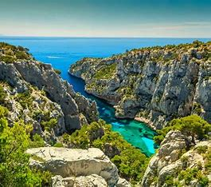

Les meilleurs Parcs de Marseille
Parc du 26ème Centenaire:

Ce parc a été construit pour fêter les 2600 ans d’histoire de Marseille.
Il se situe dans le 8è arrondissement à proximité de la place Castellane
Jardin de la Magalone:

C’est un magnifique jardin
bien caché au milieu du boulevard Michelet. Un véritable havre de paix, loin du stress et de l’agitation environnante.
Parc Borély.

C’est certainement l’espace vert le plus fréquenté par les Marseillais.
Au cœur de ses 18 hectares, le parc accueille une bastide du XVIIIe siècle au milieu d’un parc paysagé typique à la française
Parc des Bruyères .

Ce parc occupe les deux versants du vallon de l’Evêque et fait le lien entre les quartiers est et les calanques.
Parc de la Colline Saint-Joseph.

C’est un des plus beaux parcs de Marseille